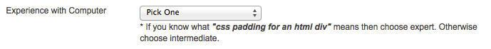

Débuter avec les outils Web 3DVG
L’objectif du cours, sur un semestre, est de découvrir — par la pratique — les fondamentaux du web. Il vise à donner aux étudiants des moyens de comprendre, mettre en œuvre une page web. Il sera complémentaire aux séances dirigées par Nicolas Tilly.
cette page va évoluer au cours du semestre et s’enrichira.

vous étiez tous "intermediate"
et vous deviendrez tous "expert" à la fin du semestre.
car “css padding for an html div” signifira quelque chose pour vous.
introduction
- présentation du plan de cours
- présentation des langages
HTML et CSS
- présentation de l’éditeur
brackets
démarage d'un projet
- démarrage d’un projet brackets
- hiérarchie des fichiers
- présentation des types de fichier qu'on rencontre dans un projet web
- exploration du navigateur Web et de ses fonctionnalités
html
- présentation du langage en balise
- structure du document
html, head, body
- balises de base
h1-h6, p, div, span
- lien hypertexte
a
- image
img
- attributs,
class et id
images pour le web
- préparer une image pour le web avec Photoshop
css : feuille de style
- créer un fichier css
- lier un fichier .css et un fichier .html
- pointeurs de classe et d’identifiant
. #
- découverte du principe de propriété CSS
- codage des couleur
#RGB, rgba(x,x,x,a)
css : box model
- box model
padding, margin, border, position
- unités
px, em, %
démarrer avec la grille et le responsive
- utilisation d'une librairie de grille CSS
- mise en place des media queries
- aborder les notions de responsive
typographie
- utiliser une police de la liste système
- importer une Google Font
- font-size
- font-weight
- font-style
- line-height
- letter-spacing
- text-align
- text-transform
- text-decoration
- lettrine css
- multi-collonage CSS3
images optimisées
- choix des formats parmis les formats web
- introduction aux principes d’optimisations